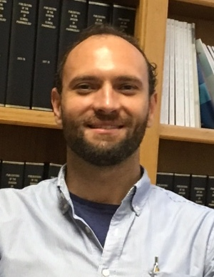

Krystian Kozek, Ph.D.
Krystian Kozek, Ph.D.Vanderbilt Center for Arrhythmia Research and Therapeutics (VanCART)
Vanderbilt University Medical Center
1225E MRBIV
2215B Garland Ave.
Nashville, TN 37232
Email: brett.kroncke@gmail.com
Who does this work?
Brett Kroncke, Ph.D.
Assistant Professor of Medicine
Vanderbilt Center for Arrhythmia Research and Therapeutics (VanCART)
Vanderbilt University Medical Center
1225E MRBIV
2215B Garland Ave.
Nashville, TN 37232
Email: brett.kroncke@gmail.com
My long-term research interests are to explain the interplay between membrane protein flexibility and structure that lead to robust function and dysfunction involved in human disease, with a special emphasis on the ion channels involved in the heart contraction cycle. My goal is to develop ion channel-specific predictive algorithms—leveraging sequence, structural, and phenotype data—capable of accurately predicting the phenotype of any point mutation within these molecules. Given the high estimated frequency of cardiac ion channel mutation carriers, estimated at ~4% of the general population, the driving force of this project is not only to provide a reliable estimate of if a variant is pathogenic, but also if a variant is not pathogenic.
Research History: For my graduate work at the University of Virginia, I focused on experimental methods development for determining membrane protein flexibility and membrane protein structure. As a Postdoctoral Fellow at Vanderbilt, I further pursued translational opportunities of experimental and computational structural biology. The last two years of my training focused on learning from experts in the fields of cardiac arrhythmia genetics, and computational phenotype-predictive modeling to construct predictive models of ion channel phenotypes and validate the resulting predictions.
Krystian Kozek, Ph.D.
Vanderbilt Center for Arrhythmia Research and Therapeutics (VanCART)
Vanderbilt University Medical Center
1225E MRBIV
2215B Garland Ave.
Nashville, TN 37232
Email: brett.kroncke@gmail.com
Fun facts about Krystian: ?
Fun facts about Loren: ?